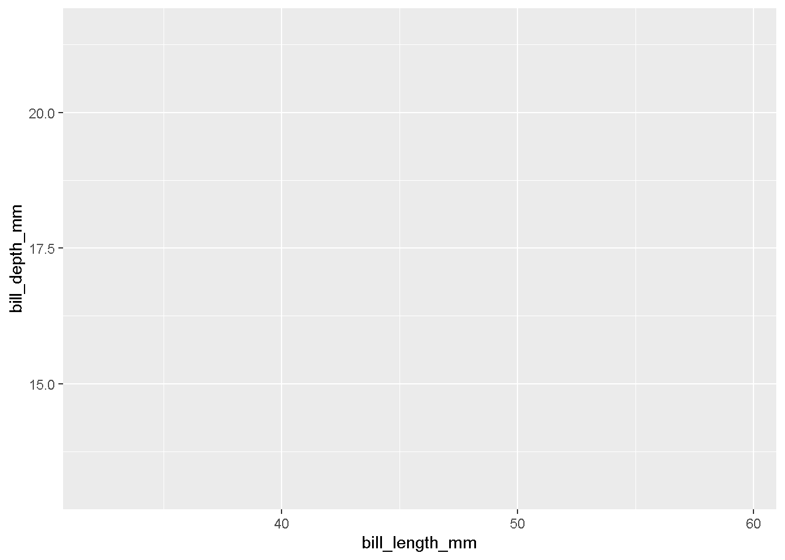
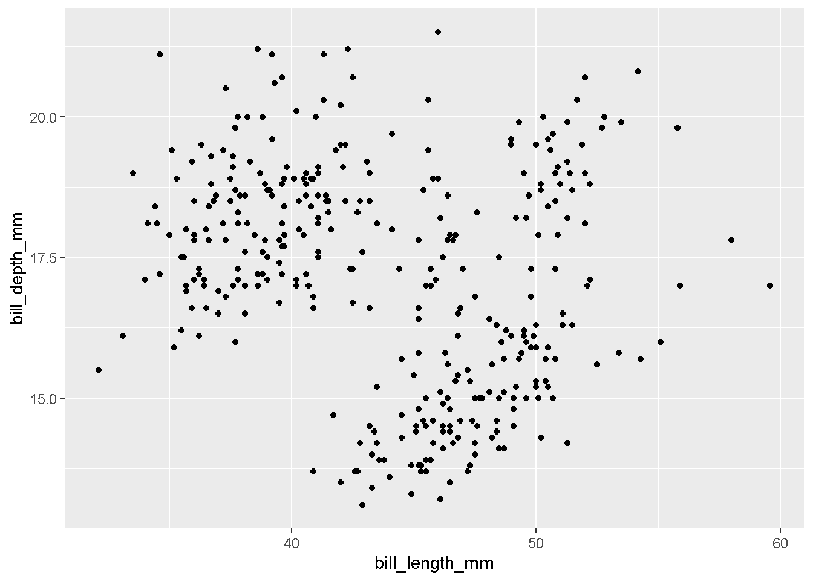
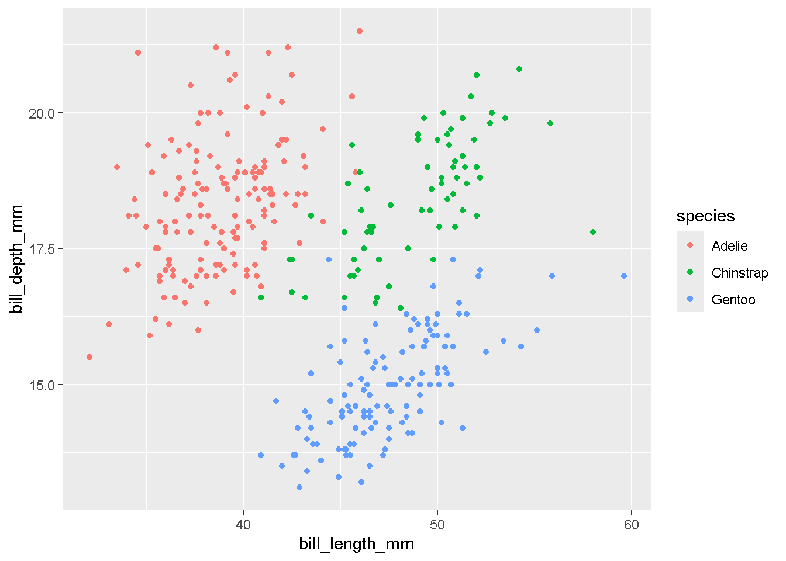
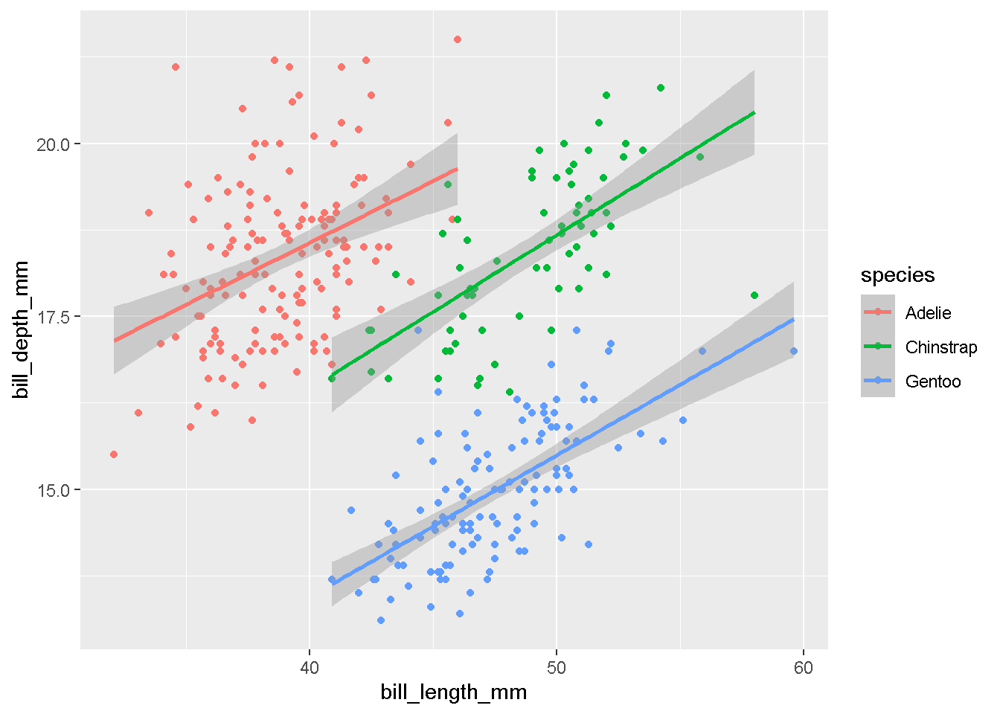
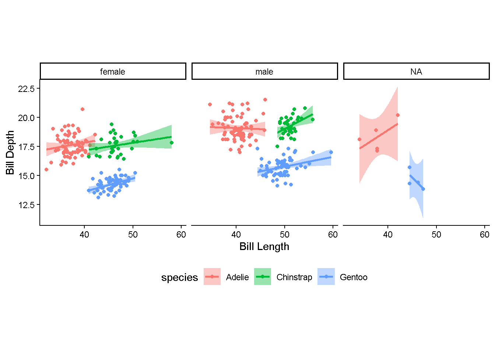

For each question, please make sure you include code output. If the question asks for comparison or further explanation, please make sure to include that as well.
Setting Up
1) Rename this assignment as “Lab 5 Assignment [Last, First].Rmd”
2) Check and set (if needed) your working directory. If you’d like to load packages with library(), please do so in this block. Make sure to load the tidyverse package! Also, please install (feel free to delete the install code after installing) and load the palmerpenguins package.
#knitr::opts_knit$set(root.dir = "C:/Users/jessi/OneDrive - Georgia Institute of Technology/MLM")here::here()
[1] "C:/Users/jessi/OneDrive - Georgia Institute of Technology/Courses/GTA/PSYC 2020/PSYC 2020L Site"
library(tidyverse)
── Attaching core tidyverse packages ──────────────────────── tidyverse 2.0.0 ──
✔ dplyr 1.1.4 ✔ readr 2.1.5
✔ forcats 1.0.0 ✔ stringr 1.5.1
✔ ggplot2 4.0.0 ✔ tibble 3.2.1
✔ lubridate 1.9.3 ✔ tidyr 1.3.1
✔ purrr 1.0.2
── Conflicts ────────────────────────────────────────── tidyverse_conflicts() ──
✖ dplyr::filter() masks stats::filter()
✖ dplyr::lag() masks stats::lag()
ℹ Use the conflicted package (<http://conflicted.r-lib.org/>) to force all conflicts to become errors
library(palmerpenguins)
Import
3) Now that we’ve loaded the palmerpenguins package, we have access to a datset called penguins. We also have access to a dataset called penguins_raw, but we will not use this one. penguins is already an object / variable we can use, but if you’d like to assign it to a different variable name (totally up to you), feel free to do that here. Either way, use three functions to get a look at this data.
getwd()
[1] "C:/Users/jessi/OneDrive - Georgia Institute of Technology/Courses/GTA/PSYC 2020/PSYC 2020L Site/labs/Lab 5 - Intermediate R"
here::here()
[1] "C:/Users/jessi/OneDrive - Georgia Institute of Technology/Courses/GTA/PSYC 2020/PSYC 2020L Site"
peng <- penguins # optional# acceptable functions (there may be more)# will comment out for brevity in the knitted file, but obviously should be printed in students'# head(peng)# summary(peng)# glimpse(peng)# str(peng)# psych::describe(peng)
4) As may be obvious from the name, this dataset contains penguin measurements for different species! Use ?penguins to read a little bit more about the variables present.
#?penguins
Tidy
5) Per the rules we learned in lab, is this a tidy dataset? How do you know?
Yes, it is. Every variable is a column, every observation is a row, and each value is one cell.
Transform & Model
Overview: as the statistician on this penguin project, you have been given two tasks:
1: Identify the mean and SD for flipper length by species
2: Identify the minimum and maximum bill length-to-depth ratio for female penguins on the Biscoe island by year.
3: Lastly, they want you to come up with and answer a question of your own with these data!
6a) Let’s start with 1: Identify the mean and SD for flipper length by species. Starting with the penguins dataset, summarize() the data to get the mean and SD for flipper_length_mm by species. Don’t forget about the .by argument for the summarize() function!
Note: there will be missing values for this dataset. Add the na.rm = TRUE argument to any mean() or SD() function to remove those.
The Gentoo penguins have the highest mean flipper length, but interestingly have the lowest SD! The Adelie penguins have the lowest mean flipper length. Or something like that.
7a) Now let’s move on to 2: Identify the minimum and maximum bill length-to-depth ratio for female penguins on the Biscoe island by year. In one pipe, do the following things:
Calculate the bill length-to-depth ratio by adding a column that divides bill_length_mm by bill_depth_mm.
Narrow down the data to the desired penguins by filtering such that only female penguins on the Biscoe island remain.
Summarize the data with two values: the minimum bill length-to-depth ratio and the maximum bill length-to-depth ratio. Do this by the year the measurement was collected.
The lowest minimum bill length-to-depth ratio for female penguins on the Biscoe island was collected in 2008. The highest maximum bill length-to-depth ratio for female penguins on the Biscoe island was also collected in 2008—that year had the largest range!
8a) Come up with your own question to answer about this dataset! As info, this question will need to include at least two functions’ worth of tidyverse piping (i.e., data |> function1() |> function2()). First, just write your question below.
How does the mean of body_mass_g for female penguins vary over species and island?
8b) Next, write the code that addresses your question.
8c) Lastly, please discuss these findings (1–2 sentences).
Some description that addresses their question and matches the findings.
Visualize
Next, we will make two visualizations from this data. We will do this step by step like in the slides.
Our first goal will be to make a scatterplot of bill length and depth with the dot color showing species. We will also add trend lines and some customization.
9a) To start, using the ggplot() function, set up a grid that uses the penguins data. Put bill_length_mm on the x-axis and bill_depth_mm on the y-axis.
ggplot(data = penguins, aes(x = bill_length_mm, y = bill_depth_mm))

9b) Next, let’s add some points. Feel free to copy down your code from the last question, and add the geom_() function that will create a scatter plot.
ggplot(data = penguins, aes(x = bill_length_mm, y = bill_depth_mm)) +geom_point()
Warning: Removed 2 rows containing missing values or values outside the scale range
(`geom_point()`).

9c) Please describe / discuss what you see in the plot above (1–2 sentences). Also—if R gave a warning, please describe what it’s telling you! No need to make any changes from the warning.
Overall, there seems to be a positive relationship between bill length and depth. There seems to be some sort of clustering too; the points are not evenly dispersed across the plot. R warned about missing data. We need to be aware that two points were missing and that R has removed them from the visualization.
9d) Now, let’s let the color of the points represent species. First, do we need to modify the aesthetic or the geom? How do you know?
Aesthetic, because color has to do with how the data maps onto the plot.
9e) Now, modify the plot such that point color represents species.
ggplot(data = penguins, aes(x = bill_length_mm, y = bill_depth_mm, color = species)) +geom_point()
Warning: Removed 2 rows containing missing values or values outside the scale range
(`geom_point()`).

9f) Please describe / discuss what you see in the plot above. How does the color indicator add information about the trends in these data? (1–2 sentences).
We can now see the reason for the clustering—it totally had to do with species. Each specie seems to have a positive relationship between bill length and depth; they just also have different central tendencies for those variables.
9g) Next, we are going to add trend lines to this plot, also as by species. Do we need to modify the aesthetic or the geom, and how do you know?
Geom. We want to add a new layer of information to our plot, so we modify the geom.
9h) Add the trend lines! Include the argument method = "lm" in your change.
ggplot(data = penguins, aes(x = bill_length_mm, y = bill_depth_mm, color = species)) +geom_point() +geom_smooth(method ="lm")
`geom_smooth()` using formula = 'y ~ x'
Warning: Removed 2 rows containing non-finite outside the scale range
(`stat_smooth()`).
Warning: Removed 2 rows containing missing values or values outside the scale range
(`geom_point()`).

9i) Lastly, please add some customization to this plot! Make at least three changes. For each change, please describe what you added / adjusted and why you think it betters the visualization.
ggplot(data = penguins, aes(x = bill_length_mm, y = bill_depth_mm, color = species, fill = species)) +geom_point() +geom_smooth(method ="lm") +facet_wrap(~ sex) +labs(x ="Bill Length", y ="Bill Depth") +theme_classic() +theme(aspect.ratio =1,legend.position ="bottom")
`geom_smooth()` using formula = 'y ~ x'
Warning: Removed 2 rows containing non-finite outside the scale range
(`stat_smooth()`).
Warning: Removed 2 rows containing missing values or values outside the scale range
(`geom_point()`).

I added faceting by sex, which enables us to glean extra information about these penguin measurement differences. I also added a theme, labels, and adjusted the aspect ratio to hopefully give a cleaner look. I modified the fill argument such that the color will match that of the lines and the points.